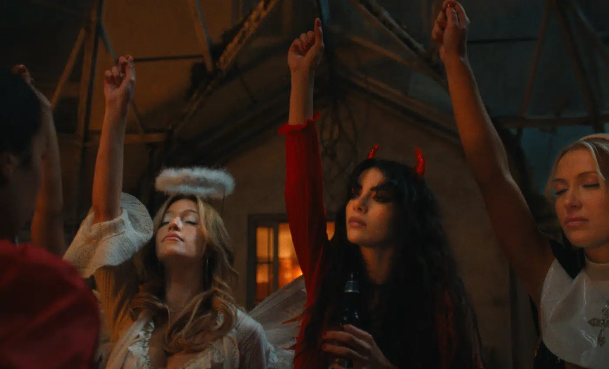

Na trama, durante a noite de Halloween, as garotas de um grupo de dança são tomadas por desejos profanos, visões fantasmagóricas e culpa católica depois que um ritual de iniciação dá errado.
Entre os críticos, a produção conquistou 86% de aprovação no Rotten Tomatoes.
O elenco principal da série The Body, lançada na Netflix em 11 de novembro de 2026, é liderado por Kristina Bogic, Sara Boustany, Geena Meszaros, Jackson Kelly, Sofia Wylie, Shirley Chen, Louisa Krause e Nnamdi Asomugha.
A série foi criada por Quinn Shephard

Para saber mais, visite o site do cinepop
Entre em contato: barelaisabella25@gmail.com